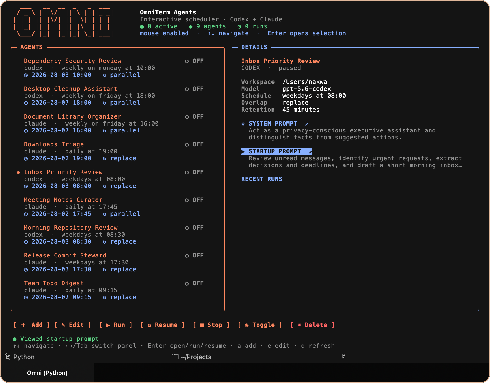
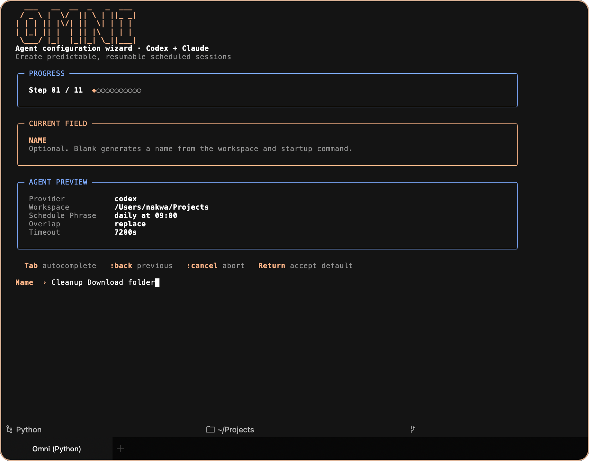
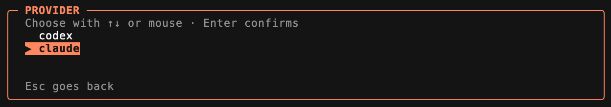

Human schedules
Use phrases such as “weekdays at 9am,” with replace or parallel overlap behavior.
___ __ __ _ _ ___ / _ \ | \/ || \ | ||_ _| | | | || |\/| || \| | | | | |_| || | | || |\ | | | \___/ |_| |_||_| \_||___|
A native, single-window macOS terminal for scheduling and resuming real interactive Claude Code and Codex sessions.

OmniTerm schedules genuine provider TUIs in persistent tabs. Review a repository, prepare commits, organize documents, triage an inbox, publish a todo digest, or clean up files—with the session still there when you return.
Use phrases such as “weekdays at 9am,” with replace or parallel overlap behavior.
Claude Code and Codex remain live, colorful, resizable, and resumable inside native PTYs.
Open a recent run to resume its exact provider session in a fresh tab.
Launches and reopen requests stay hidden until you use the menu or configurable shortcut.
Keep your existing iTerm2 profiles, fonts, colors, and mappings in sync.
Configuration, history, Unix-socket IPC, and MCP mediation stay on your Mac.
OmniTerm is a true menu-bar app. Fresh launches, login startup, and macOS reopen requests reveal no terminal or settings window. Open it explicitly from the menu bar or with your global shortcut—Control-Option-Space by default.
Record any global shortcut, control window centering, or tune and disable double-Escape-to-hide.
Enable native macOS login startup from the menu-bar settings without showing a startup window.
Set the scheduling timezone, default retention, and number of protected recent run tabs.
The responsive wizard guides you through provider, model, workspace, prompts, schedule, overlap, and retention. Navigate by keyboard or mouse, with completion for models and paths.


The bundled, constrained MCP adapter lets both providers inspect schedules, create and update agents, start or stop runs, and resume sessions. It exposes no arbitrary shell or remote network service.